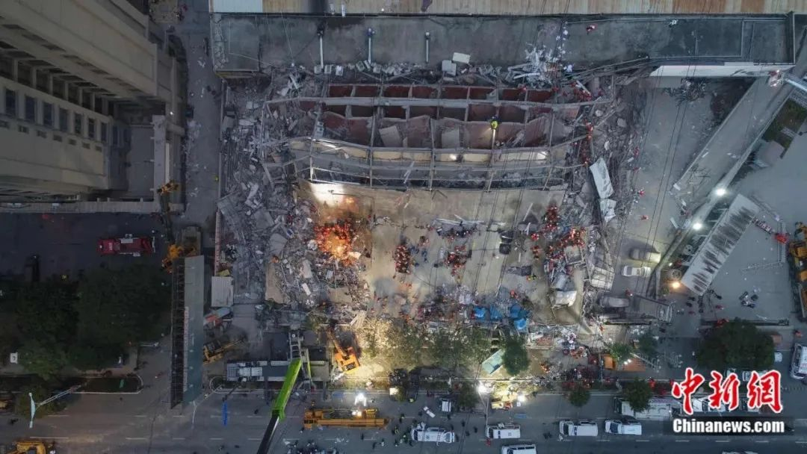

泉州欣佳酒店整栋坍塌，装修期间就曾引发承重担忧
原文链接 备份链接 酒店在装修期间，就曾引发同楼商户对承重能力的担忧。“在酒店装修的那两三个月，因为压力问题，我们一楼商户的门窗玻璃被挤压炸裂五六块，后来觉得房子太危险，我就搬走了。” 记者 | 吴 雪 3月7日，随着莆田、漳州两市11名 …

为何将这座屡次被罚
且所在建筑内部仍在装修的酒店
定为疫情隔离观察点？


3月7日晚，泉州鲤城区欣佳酒店所在的建筑发生楼体坍塌，楼内9人自行逃出，71人被困。截至3月8日16时，已救出48人，其中10人死亡，余下38人分别送至四家定点医院救治。截至发稿时，另有23人还在搜救中。该楼的业主杨金锵已被公安部门控制。
泉州应急救援工作领导小组于3月8日召开两场发布会，通报了事件相关情况。据相关部门介绍，新冠肺炎疫情发生后，欣佳酒店被作为集中医学观察点，用以对来自重点疫区或有相关旅居史的人员，进行集中医学观察。
此次事件救援组副组长、鲤城区政府代区长苏延辉在3月8日下午的发布会上介绍，欣佳酒店坍塌时，楼内有接受观察人员58人，其中随行子女12人、返乡7人、务工37人、探亲2人。所有人员在进入定点观察点之后，均已进行核酸检测，结果均为阴性。此外，欣佳酒店还有管理、服务等人员16人，另有租在该栋大楼的车行人员6人。
伤者被四家医院收治，分别为泉州市第一医院、福建医科大学附属第二医院、联勤保障部队第910医院、泉州市中医院。联勤保障部队第910医院行政办公室人员告诉《中国新闻周刊》，他们接收的6名伤者目前有重症患者，也有轻症患者，至于哪些伤员被送到哪家医院，是由泉州市卫健委安排的。泉州市中医院行政部门一位值班人员回应《中国新闻周刊》称，他们接收的14名伤者都是轻伤。
3月8日上午，国家卫健委派出了中山大学附属第一医院神经外科、胸外科、骨显微外科、重症医学科等4名国家级专家抵达泉州，指导抢救。医院对每名伤者进行血相、影像学等医学检查，对每位伤者实行“一人一室一团队”以及必要的心理疏导，伤者情势平稳。
目前，现场保有15辆监护型救护车待命，并携有20名院前急救人员协助抢救。院前急救人员是指在院外对急危重症病人进行急救的医护人员。另有市区专业队伍负责现场防控工作。
据相关部门了解，坍塌建筑建设于2013年，占地约5亩，主体7层，每层1000平方米，楼高22米，为钢结构建筑物。2018年改造为欣佳酒店，并于当年6月开业，酒店有各类客房共计66间。
事发前，该栋建筑内正在进行装修。垮塌前几分钟，有商户接到楼内施工人员电话，称进行作业时，一层的一根柱子发生变形。而泉州市鲤城区住建局局长张翼在事后对媒体称，该建筑一楼共有6间，其中两间原为超市，今年春节前，房屋业主将一楼出租的超市收回重新改装。而坍塌原因是装修引起还是楼体本身的结构问题，还需进一步甄别。
据公开资料显示，该酒店此前曾多次被处罚：2018年11月，因未按规定办理住宿登记，泉州市公安局鲤城分局曾责令其整改，并罚款3000元。2019年12月，因相同的问题受到相同的行政处罚。另外，在2019年7月，其还因未按照《个体工商户年度报告办法》规定报送年度报告，被泉州市工商行政管理局鲤城分局列入经营异常名录。2019年8月，其经营场所发生过一次变更，从该楼6楼变为一层大厅以及四至六层。
为何将这座屡次被罚且所在建筑内部仍在装修的酒店定为疫情隔离观察点？《中国新闻周刊》就此联系泉州市鲤城区疾病预防控制中心，一位办公室人员回应称，这是鲤城区卫健局做的安排。而鲤城区卫健局工作人员告诉《中国新闻周刊》，这是根据上一级的文件执行的，并不清楚选点的具体原因。3月8日下午，《中国新闻周刊》多次致电泉州市卫健委办公室，电话始终无人接听。
《中国新闻周刊》查询到，欣佳酒店在该垮塌建筑中占据4、5、6三层，该栋楼3层有一家名为琴悦公馆的足浴和名为小资生活吧的餐饮店。此外，楼内商户还包括福建省顶鑫再生资源回收有限公司、泉州全德宝汽车销售有限公司等。
3月8日下午，《中国新闻周刊》联系泉州全德宝汽车销售有限公司负责人，其称于2013年以4万元/月的租金，向房东杨金锵租下一层一半面积的店面，是最早在楼内经营的商户之一。整栋楼内，除了他们，只有一家汽车维修公司，租用了一楼的剩余面积。
全德宝汽车销售有限公司负责人告诉《中国新闻周刊》，直到2016年，房东杨金锵才开始招商，此前整栋楼只有钢架，从二层可以直接看到七层底部。那时，全德宝汽车销售有限公司将第七层作为公司的员工宿舍。而一层此前没有实墙，仅是玻璃门窗，柱子实为钢管外包木板。
2017年初，杨金锵开始装修欣佳酒店，用混凝土浇筑3层到6层地板，装修过程中，一楼的玻璃不断被震裂，上述租户向杨金锵反应无果，最后在当年年底搬离了该楼。
据相关工商资料显示，杨金锵于2018年注册登记该酒店。杨金锵今年65岁，泉州本地人。其名下除了该酒店，还有泉州市新星机电工贸有限公司，其为法人，于2006年注册，注册资本330万元。
值班编辑：俞杨
推荐阅读
▼


原文链接 备份链接 酒店在装修期间，就曾引发同楼商户对承重能力的担忧。“在酒店装修的那两三个月，因为压力问题，我们一楼商户的门窗玻璃被挤压炸裂五六块，后来觉得房子太危险，我就搬走了。” 记者 | 吴 雪 3月7日，随着莆田、漳州两市11名 …
原文链接 备份链接 记者/曹慧茹 李佳楠 佟晓宇 李东 实习记者/周缦卿 编辑/ 石爱华 宋建华 泉州一七层建筑整体坍塌 3月7日19时15分，泉州市鲤城区一栋大楼发生整体坍塌事故，事故现场共有71人被困（不含自救逃生的9人）。截至3月8 …
原文链接 备份链接 该酒店之前被改造为泉州鲤城区的医学观察点，用以隔离观察密切接触者，事发时被困人数约70人。参与救援的人士表示，现场情况“惨烈”。知情人称，酒店所在建筑曾进行大规模改造 文 |《财经》记者 俞琴 白兆东 鲁伟 编辑 | …
原文链接 备份链接 在围观者拍摄的视频中 有人员被陆续从事故地点背出 消防、警方和医护人员在现场紧急救援。孙虹摄 3月7日晚7点多，泉州市欣佳酒店发生楼体坍塌。该酒店为当地一处新冠肺炎密切接触者隔离观察点。 欣佳酒店位于泉州市鲤城区南 …
原文链接 备份链接 记者 | 李秀莉 郜超 实习记者 | 李晓洁 3月7日晚7点左右，泉州市鲤城区南环路欣佳酒店发生楼体坍塌事故，该酒店是鲤城区新冠肺炎医学观察点，逃生9人，受困71人。截至本刊发稿，事故现场已救出48人，其中10人死亡。 …